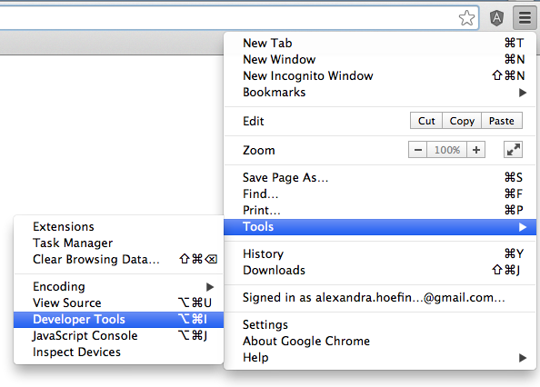

Getting More
out of
Chrome's Developer Tools
Slides: www.ahoef.co/devtools/slides
Demo Files: www.ahoef.co/devtools/demo.zip
Welcome!
- This class will be a combo of lecture + exercises
- It is 2.5 hours long, with a 15 minute break
- Please open demo files in your text editor
- Please make sure your Chrome is up to date
- There are no stupid questions — ask questions at any time!
Intros
- What's your name and background?
- What do you hope to learn today?
- Which of your web projects are you most proud of?
Overview
- Dev Tools are a set of resources built into every modern browser
- Purpose is to help view and edit the DOM
- Very useful in understanding how many pieces of code work together
- Essential to debugging front-end code
- Important time savers
History
- Webkit’s original web inspector was introduced in 2006
- Provided an opportunity to view a live DOM hierarchy with the ability to tunnel into nodes
History
History
- Google Chrome browser debuted in 2008
- Expanded webkit’s web inspector and became popular among web developers
- Now up to 35th version release with channels for Mac, Windows, Linux, Android, and ios
- Makes up about 43% of web browser market share
To note:
- Firefox’s Firebug is a comparable resource
- Many argue that because of the rate of improvements and enhancements from Google research and funding, Firebug lags behind Chrome
- Chrome is considered to be more 'bleeding edge'
- Dev Tools in Canary provide the ‘latest + greatest’ resources
We made it through the overview!

Any questions?
Opening DevTools
To open Developer Tools,
- Hamburger Icon > Tools > Developer Tools
- 
- Keyboard Shortcut for Mac — option + command + j
- Keyboard Shortcut for PC — control + shift + j
Settings
To view Settings,
- Click on the gear in upper right corner of DevTools
To change Docking,
- Click on window icon next to gear
- Long click to change orientation
Basic Inspecting
- On a static page, HTML will mirror exactly what's in code
- The DOM node tree groups equilateral elements, and allows tunneling from parent to child elements
- To tunnel, toggle the horizontal and vertical arrows to the left of tags
Basic Inspecting
- Hover over HTML to see elements highlighted in blue in browser pane
- Two ways to view the code for a specific visual element:
- Right click item > Inspect Element
- Click magnifying glass in upper left, then click item
Basic Inspecting
To manipulate HTML:
- Delete node
- Drag node
- Right click element > 'Edit as HTML'
Basic Inspecting
To view info about an image:
- Hover over image path in img tag
- See actual and rendered sizes
Basic Inspecting
- When an html element is selected, its matching CSS will be listed in the Styles tab, in order of inheritance
Basic Inspecting
CSS Inheritance in a nut shell:
- !important tags
.slider {color: pink !important;} - CSS from JavaScript
$('.slider').css('color', 'green'); - inline styles
class="slider" style="color: red" - external stylesheets
- user agent stylesheet

Basic Inspecting
CSS Inheritance on individual elements:
- Id
#slider - Class
.slider - Tag
div
A CSS-tricks post on CSS specificity and point values
Basic Inspecting
- Live box model at the bottom of Styles tab
Basic Inspecting
- To add new styles, click the + icon
- To view pseudo classes, click the arrow icon
Exercise!
- Reorder the nav on the GDI homepage to this order:
- Determine the rendered size of the orange wrench image at a screen width of 1100px
- Remove underline on hover state of nav items, and instead make text italic
We made it through the basics!

Any questions?
Let's look through the demo site and code!
Device Emulation
- Toggle the phone icon next to the magnifying glass
- Select options
- Refresh the page
- This is useful for debugging touch events like swipe!
- Chrome 38 Beta includes an even further enhanced Device tool, which allows for draggable breakpoints. Read more here
To view a mobile version of a site:
Resources Tab
- A way to view the directory of all rendered local and remote project files
- Updates live as content is updated, (ex. lazy loading images)
Sources Tab
- A way to view and edit project source code
- Saving files here means you don't need to copy/paste from DevTools to local files!
- Right click > Save As > Local directory file name
- Open revision history by right click > Local Modifications > History Tab
- Revert as needed
Workspaces
- As an alternative to saving over individual files, we can use Workspaces to map entire directories
- With this, changes are automatically updated in local files!
- Settings > Workspace (in left nav) > Add Folder > Permission

Workspaces
- Workspaces can be used with preprocessors like Sass too!
- Requires Sass version 3.3+, CSS sourcemaps, + Chrome Canary
- This easy-to-follow tutorial explains how to get set up
Exercise!
- Map your local project folder to the browser
- Make 3 style updates
- Revert changes
Networks Tab
- Another way to view site files and server requests/responses
- Useful for checking whether requests are being delivered or sent successfully
- Option icons in upper left:
- Record
- Clear
- Filter
- Display
Networks Tab
- Identifies GET or POST method

HTTP tutorial
Networks Tab
- Local files return a status of finished/failed
- Remote files return a HTTP status number, usually in the 200-500 range
- 200: success
- 304: cached content
- 404: not found
- Full list of protocols
Networks Tab
- Click into an individual file to view more information
Console
- Prints error messages with line numbers when there are network issues
- Prints console.log() messages from code
- Also serves as a live JavaScript console
Exercise!
- Open exercise.html in browser
- Determine which network errors are occurring
- Correct what you think is causing the errors using the Networks Tab and Console
Audits Tab
- Runs a performance test on your page + offers suggestions for optimization
Timelines Tab
- Another tool to analyze site performance
- Graphs the time to load, script, render, and paint the DOM
- Any points under 30 frames/second are red flags
Profiles Tab
- Provides additional information about how much processing time each function takes
- Can be a good way to uncover expensive functions that may be overkill, like looping through too many iterations
- Best to record small events at a time
JavaScript Debugger
- A feature that allows us to pause functions with breakpoints
- Helpful for stepping through functionality line by line
JavaScript Debugger
- Set breakpoints by clicking on line numbers within functions
- Refresh the page
- The JS will pause at the first breakpoint
- Now we can hover over variable to evaluate their states, use the console to type code, and step over/in/out of functions
- Let's debug the am/pm issue with the 'Check the Time!' button
Further Resources
Any questions?

Stay in touch!
alexandra.hoefinger@gmail.com@ahoefinger
Please fill out our survey!
http://bit.ly/gdi-chrome-tools